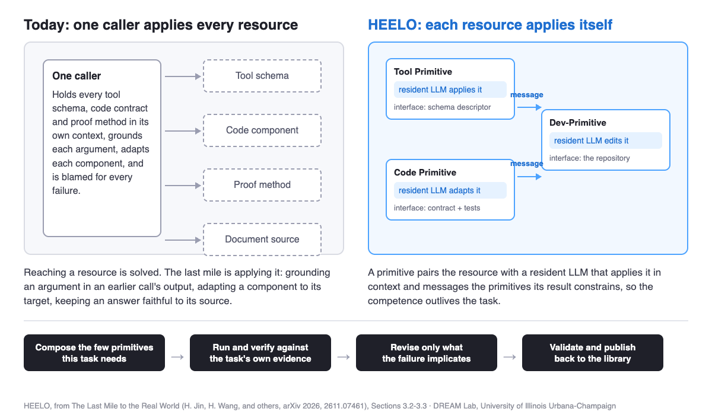

Why Do AI Agents Fail at Real-World Tasks? The Last Mile
Reaching a tool is solved. Applying it to the task at hand is where agents still break — and that step can be packaged and reused.
By Haibo Jin, Peng Kuang, Haohan Wang, and others · · About our arXiv preprint
Key findings
- AI agents fail at real-world tasks mostly at what The Last Mile to the Real World (Haibo Jin and colleagues, University of Illinois Urbana-Champaign, arXiv 2026) calls the last mile: the step from reaching a resource to applying it to the task's own objects.
- On the 46 live tasks of the heelo.dev platform, Claude Opus 5.5 with Claude Code completed 9 on its own and 39 when connected through MCP to HEELO, the paper's harness engineering framework; GPT-6.1 Sol with Codex went from 9 to 35.
- On the same GPT-5.6 Sol backbone, Dev-Primitives raised Terminal-Bench 4.0 resolution from 37.3% under Codex to 55.5%, and Tool Primitives raised the ToolBench pass rate on Qwen3-8B from 55.8% for DFSDT to 75.1%.
- The gain is not extra inference: a budget-matched control that spends the same calls self-refining arguments over raw tool schemas reached 34.2% on ToolBench, against 75.1% when the same tools were wrapped as primitives.
Where exactly does an AI agent break on a real task?
Ask why AI agents fail at real-world tasks and most answers point at the model. The measurements say otherwise. On Terminal-Bench 4.0 at maximum reasoning effort, GPT-5.6 Sol with Codex resolves 37.3% of tasks and Claude Opus 5 with Claude Code resolves 51.8%. These are strong models inside the harnesses built for them, and they still miss half the work. The Last Mile to the Real World: Agent-Native Primitives as Reusable Building Blocks for Solving Real-World Tasks, by Haibo Jin, Peng Kuang, Xiaopeng Yuan, Lucheng Fu, Jerry Wang, Xucheng Yu, Yaoning Yu, Dehao Wu, Runguo Li, Colin Su, Jingxuan Sun, Xuyang Liu, Haojing Luo and Haohan Wang at the University of Illinois Urbana-Champaign, locates the failure in a narrower place.
The last decade of agent work has been about reach: tool catalogues, retrieval, memory, skill libraries, the Model Context Protocol. Reach is largely solved. What remains is application. A tool call has to ground every argument, often in an earlier call's output, and respect the rules of its environment. A retrieved code component has to be adapted to its target and to everything that depends on it. A proof method only applies where its conditions hold. An answer drawn from documents has to stay faithful to its source. Today that competence sits with the caller, so every harness rebuilds it for every task: what the caller has to take in grows with the library, what it learns dies with the task, and its work is hard to check.
Two more things break alongside it. Composition: what one step produces has to reach the steps that consume it, in a usable form. Evidence-driven revision: when a task fails, the failure has to be traced back to the work that caused it, so only that work is redone. Together these three make up the last mile.
Key terms
- Agent harness
- Everything a task needs around the model: the tools, the execution loop, the context, the checks and the retries. Codex and Claude Code are the harnesses built for GPT and Claude.
- The last mile to the real world
- The step from reaching a resource to applying it to the task's own objects, including getting each result to the step that consumes it and tracing a failure back to the work that caused it.
- Agent-native primitive
- A reusable resource — a tool, a code component, a proof method, a document source, a repository file — packaged with a resident LLM that applies it to a natural-language request in context and sends messages to the other primitives its result constrains.
- Resident LLM
- The model that lives inside a primitive, conditioned on that primitive's resource. One base model can serve as the resident LLM of an entire library, conditioned on a different resource each time.
- HEELO
- Harness Engineering around Evolving Agent-Native Primitives for the Last Mile to Real-World Tasks: the framework that composes each task's harness from a library of primitives, verifies it against the task's own evidence, and publishes validated primitives back to the library.
What is an agent-native primitive, and how does HEELO use one?
The proposal is one sentence long: the competence to apply a resource should travel with the resource. An agent-native primitive pairs a resource with a resident LLM and an interface. Invoked with a request in context, the resident LLM applies the resource and returns both a result and messages addressed to other primitives — the requirements its result places on them. Passive artifacts become participants that reason locally and talk to each other, and a harness can find and invoke a primitive without reading the resource at all. Where a domain offers an exact procedure, a program takes the resident LLM's place.

HEELO adds the three mechanisms a primitive cannot supply on its own. Library selection and composition finds candidates through their interfaces, lets each primitive assess whether it actually applies rather than trusting similarity alone, and wires the few the task needs into a task-specific graph that carries each result and message to its consumer. Evidence-based execution and improvement runs that graph in rounds, verifies the integrated result against evidence from the environment — a build, a test, a compiler, a trace — and on failure revises only the primitives that the evidence implicates, keeping the rest. A failed build sets the verdict to fail, and no model judgment overrides it. Validation and publishing improves the library between tasks: a new or improved primitive enters only after its own tests, compiler or matched development runs confirm it.
Two properties of that selection are proved in the companion studies and restated in the paper. Activation stays bounded by the task's demand rather than by the library's size, so a library can grow without the harness growing. And per-task composition beats the best single fixed harness exactly when primitives help unevenly across tasks — which is what the experiments find.
How much do agent-native primitives actually help?
The paper instantiates HEELO as eight primitive families, each built for one kind of real-world task, and evaluates them on more than twenty benchmarks. The libraries are large where the domain allows: 25,519 Tool Primitives, 16,464 of them wrapping live APIs; 1,424 Code Primitives, each validated against the tests it carries; and 82 Math Primitives whose Lean artifacts compile.

| Primitive family | Benchmark and metric | Baseline | With primitives |
|---|---|---|---|
| Tool | ToolBench pass rate, Qwen3-8B | 55.8% (DFSDT) | 75.1% |
| Code | Repository delivery, 522 LEGO-REPO tasks | 0.3180 (execution feedback) | 0.5134 |
| Math | Putnam hit@5, proof-method selection | 84.2% (strongest reranker) | 95.0% |
| Knowledge | MultiDoc2Dial accuracy, GPT-5.6 Luna | 64.9% (Hybrid RAG) | 77.6% |
| Agent | Mean accuracy over 8 benchmarks, Qwen3-8B | 58.8% (single agent) | 75.3% |
| Dev | Terminal-Bench 4.0 resolved, GPT-5.6 Sol | 37.3% (Codex) | 55.5% |
| Navigation | GAIA-Text-103 accuracy | 45.6% (iterative sparse retrieval) | 58.3% |
| Harness | Terminal-Bench 2.0 Pass@1, 45 tasks | 60.0% (mini-SWE-agent seed harness) | 72.2% |
The more interesting results are the controls, because they say why this works. With the backbone, the call budget and the tools all held fixed, reallocating the primitives' calls to self-refining arguments over raw schemas reaches 34.2% ToolBench pass rate against 75.1% — so the gain is the primitive, not extra thinking. Nor is access the answer: showing the caller the same retrieved code components with their contracts and tests as read-only context reaches 0.3544 delivery, barely above the 0.3469 of diagnosis with no library at all, against 0.5134 for Code Primitives.
What crosses between primitives matters as much as what happens inside them. In the Dev-Primitives ablation, removing the directed messages between components while keeping each primitive's local reasoning and edits lowers Terminal-Bench 4.0 resolution from 51.8% to 46.1% in that ablation's setting and the SWE Refactor Bench composite from 31.0 to 23.5, with a much smaller drop on SWE-bench Verified (97.0 to 94.2) — the pattern you would expect if messages are what coordinate changes across files. And activating more than the task needs costs accuracy, not just money: keeping every initially identified Dev-Primitive active raises calls from 9.6 to 28.7 per SWE-bench Verified task and lowers the score on all four benchmarks by 1.2 to 3.0 points.
Does any of this survive outside a frozen benchmark?
Benchmarks freeze the environment and fix the grader in advance. Real tasks run against live services, accounts and people. To test that, the team built heelo.dev, a platform that exposes real-world actions — publishing pages, sending outreach, reading invoices, scraping sources, calendars, flights, browser automation — as agent-native primitives behind one endpoint, including an MCP server that external agents connect to.
They then wrote 46 tasks covering 26 capabilities in four end-to-end loops, with pass criteria fixed before the first run as facts a person can check: an invoice total, the pages of a PDF, a refused channel. The tasks include failure paths, such as a wrong contact identifier that must return a clean error and a page that robots.txt disallows. No task names a heelo.dev tool.
| Arm | Mean task score | Tasks completed (of 46) | Time per completed task | Cost per completed task |
|---|---|---|---|---|
| Claude Opus 5.5 with Claude Code | 28% | 9 | 6.3 min | $1.24 |
| + HEELO through MCP | 90% | 39 | 3.4 min | $0.80 |
| GPT-6.1 Sol with Codex | 25% | 9 | 8.0 min | $0.65 |
| + HEELO through MCP | 83% | 35 | 3.5 min | $0.42 |
Both agents gain time and money as well as tasks: 1.9× and 2.3× less time and about 1.55× lower cost per completed task. The composition itself is cheap — choosing which Harness Primitives to wire in costs 2.7% to 4.3% of a single actor attempt. And smaller models hold up inside the primitives: with GPT-OSS-20B as the resident LLM of every Code Primitive and as the diagnosis model, delivery keeps 95.1% of its value at 24.0% lower recorded-call cost. The pattern across families is consistent — a strong model coordinates, cheaper models do the work inside the primitives.
How does this compare with other approaches to building better agents?
Several lines of work attack the same problem from different sides, and the paper is explicit that it builds on them.
- ToolLLM: Facilitating Large Language Models to Master 16000+ Real-world APIs (Yujia Qin and colleagues, ICLR 2024) collected 16,464 real RESTful APIs and the ToolBench dataset, and introduced DFSDT, a depth-first search over a decision tree of calls. It is the reason a large tool catalogue is reachable at all, and it is the strongest same-backbone scaffold baseline in this paper, at 55.8% ToolBench pass rate against 75.1%. The difference is where the binding happens: in ToolLLM the caller writes the schema-compliant arguments; in a Tool Primitive the tool does.
- Voyager: An Open-Ended Embodied Agent with Large Language Models (Guanzhi Wang and colleagues, TMLR 2024) showed that an agent can grow a library of executable skills from its own experience in Minecraft, with self-verification deciding what is kept. Voyager's skills are code that a central agent calls; agent-native primitives add a resident model to each unit and a validation path separate from task execution.
- Agent Workflow Memory (Zora Zhiruo Wang, Jiayuan Mao, Daniel Fried and Graham Neubig, ICML 2025) induces reusable workflows from past trajectories and feeds the relevant ones into later tasks, improving relative success on Mind2Web and WebArena. It is also a baseline here, in the knowledge-intensive setting, where the paper reports that it moves question-answering accuracy by at most 3.9 points — a useful reminder that remembering how a task went is not the same as understanding the source or the tool it used.
- Automated Design of Agentic Systems (Shengran Hu, Cong Lu and Jeff Clune, ICLR 2025) and AFlow: Automating Agentic Workflow Generation (Jiayi Zhang and colleagues, ICLR 2025) both search for better agent programs — ADAS with a meta agent that writes new agents in code, AFlow with Monte Carlo tree search over code-represented workflows. They produce one strong design; HEELO instead selects a design per task, which is the comparison its Proposition 3.2 formalizes and the experiments test: per-task composition reaches 80.5% Pass@1 on SWE-bench Verified against 76.0% for the best single primitive applied everywhere and 73.3% for a random composer.
- Better Harnesses, Smaller Models: Building 90% Cheaper Agents via Automated Harness Adaptation (Chenyang Yang, Xinran Zhao, Tongshuang Wu and Christian Kästner, arXiv 2026) is the closest contemporary in spirit, and it is work by another group that we think deserves more attention. It maps agent failure modes to harness adaptation strategies and has a meta agent discover adaptations from failure trajectories, reporting significant improvements on 16 of 21 task–model pairs and closing the small-model-to-frontier gap on seven. Its conclusion agrees with ours where it matters most: much of a task's difficulty can be lifted out of the model and into the harness. The two papers differ in what the harness is made of — tailored instructions and orchestration loops there, validated reusable units with their own resident models here — and they have not been compared head to head.
The Model Context Protocol sits underneath all of this as plumbing, and the heelo.dev evaluation uses it: an MCP server is how Claude Code and Codex reach HEELO at all. The result above is a reasonable argument that the protocol is not the hard part. The same agents, over the same protocol, went from 9 tasks to 39 and 35 depending on what was on the other end of it.
What this does not show
This is an arXiv preprint (102 pages, 21 figures, 54 tables) and has not been peer reviewed.
The 46 live tasks are the paper's strongest claim and also its most self-made evidence: the same team built the platform, wrote the tasks and fixed the pass criteria. The criteria were set before the first run and are facts a person can check, and two of the four loops were graded blind by Claude Sonnet 5.5 with the arm names and tool names removed, then reviewed by a person against the run records. Still, when a run exposed a defect in a primitive, the primitive was fixed and the task re-run, and the reported numbers are the post-fix runs. Most tasks ran three times per arm. Forty-six tasks is a small sample, and no other harness-adaptation system was run on them.
Part of the 9-versus-39 gap is access rather than competence. An agent on its own received no credentials and could not act on any account, so it was scored on the pass criteria its work met — a ready draft, a script that needed only a credential. The gap therefore measures what a connected, primitive-backed platform adds over an agent that has to build everything itself, not a like-for-like contest between two agents with the same permissions.
On the benchmark side, each of the eight families uses its own benchmarks, metrics and backbone, so the rows of the table above cannot be compared with one another, and there is no single backbone on which all eight were run together. The companion studies carry the per-family evidence; this paper's contribution is the shared definition, the shared mechanisms and the cross-family analysis.
Frequently asked questions
What is an agent harness?
An agent harness is everything a task needs around the model: the tools it can call, the loop that runs them, the context it is given, the checks on its output, and the retries. Codex and Claude Code are harnesses built for GPT and Claude. The Last Mile to the Real World argues that a harness should not be fixed in advance but composed for each task from validated parts.
What is an agent-native primitive?
An agent-native primitive is a reusable resource, such as a tool, a code component, a proof method or a document source, packaged together with a resident LLM that applies the resource to a request in context and sends messages to the other primitives its result constrains. The caller states a need in natural language instead of reading the resource and binding it itself.
Does connecting an agent to more tools through MCP make it better at real tasks?
Access alone is not enough. In the paper's own control, showing the caller the retrieved code components with their contracts and tests as read-only context reached 0.3544 repository delivery, close to the 0.3469 of diagnosis with no library at all and well below the 0.5134 of Code Primitives. What helped on the 46 live heelo.dev tasks was that each tool behind the MCP server applies itself, not that more tools were reachable.
How well do Claude Code and Codex do on real-world tasks on their own?
On the 46 live tasks of the heelo.dev platform, Claude Opus 5.5 with Claude Code and GPT-6.1 Sol with Codex each completed 9, with mean task scores of 28% and 25%. On public benchmarks, Terminal-Bench 4.0 at maximum reasoning effort resolves 37.3% of tasks for GPT-5.6 Sol with Codex and 51.8% for Claude Opus 5 with Claude Code.
Citation
@article{jin2026lastmile,
title = { The Last Mile to the Real World: Agent-Native Primitives as Reusable
Building Blocks for Solving Real-World Tasks },
author = { Jin, Haibo and Kuang, Peng and Yuan, Xiaopeng and Fu, Lucheng and
Wang, Jerry and Yu, Xucheng and Yu, Yaoning and Wu, Dehao and
Li, Runguo and Su, Colin and Sun, Jingxuan and Liu, Xuyang and
Luo, Haojing and Wang, Haohan },
journal = { arXiv preprint arXiv:2611.07461 },
year = { 2026 }
}Related from our lab
- Agent Primitives, the multi-agent family in this framework, explained
- How a theorem prover picks a proof method — the Math Primitives family
- RAG that learns a source over time — the Knowledge Primitives family
- AI agents running a full gene expression analysis end to end
- What self-evolving agents forget as they adapt
- Will AI replace scientists? — essay by Haohan Wang on what agents doing real work still need a human for
- All DREAM Lab preprints